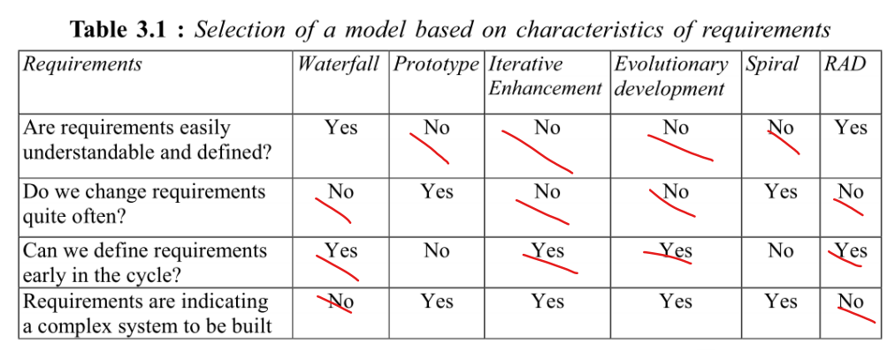
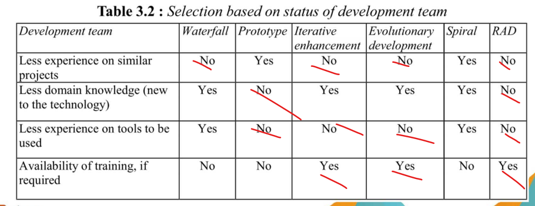
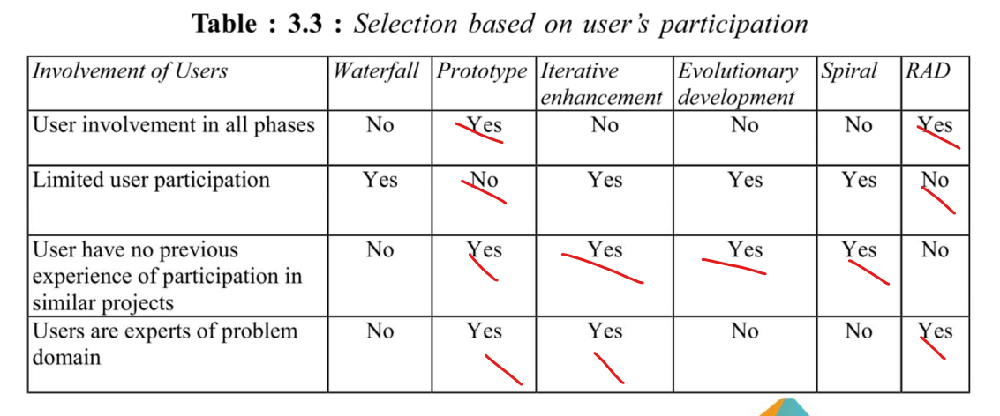
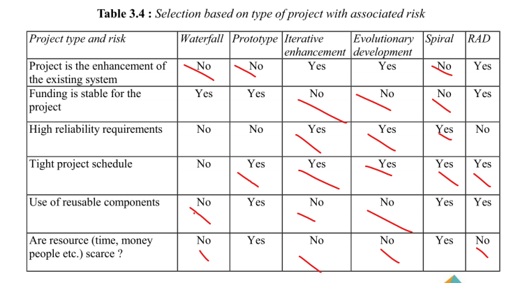

Processo de Desenvolvimento de Software
Histórico de Versão
| Data | Versão | Descrição | Autor |
|---|---|---|---|
| 17/04/2024 | 1.0 | Criação do Documento | Raphael, Gustavo Melo |
| 23/04/2024 | 1.01 | Definição das aplicações dos processos de ER | Gustavo Melo, Raphael |
Critérios propostos por GUPTA para escolher o processo de desenvolvimento, com base nas características dos Requisitos, da equipe de desenvolvimento, do envolvimento do usuário e do tipo de projeto e risco associado, respectivamente:




O resultado foi:
- Cascata: 7
- Protótipo: 9
- Iterativo-incremental: 13
- Evolutivo: 12
- Espiral: 6
- RAD: 11
Com base no framework GUPTA, o processo escolhido para o desenvolvimento será o Scrum/XP, que tem um ciclo de vida iterativo incremental. As fases do fluxo de trabalho de desenvolvimento são extraídas do Scrum, sendo:
- Backlog Planning: nessa fase serão decididos e declarados os requisitos do projeto. Eles podem ser atualizados, adicionados ou removidos em outras etapas.
- Sprint Planning: nessa fase será planejado as atividades que serão executadas durante a sprint. Para que ocorra de maneira correta, a equipe se reúne para realizar esse planejamento em conjunto.
- Sprint Review: é nesse momento em que a equipe faz uma revisão de como foram feitas as coisas durante a Sprint.
- Sprint Retrospective: uma vez concluída a revisão, a equipe debate sobre os pontos positivos da sprint passada e as possíveis melhorias para a próxima sprint.
Já enquanto equipe de desenvolvimento estaremos aplicando práticas do Extreme Programming (XP). Seriam essas práticas:
- Pair-programming: dois membros da equipe trabalhando na mesma estação, onde um programa e o outro revisa.
- Programação Orientada a Histórias: a equipe de desenvolvimento, irá trabalhar com funcionalidades em pequenos incrementos, com base em histórias de usuário.
- On-site customer: cliente sempre por perto para dar feedbacks.
- Propriedade coletiva do código: todos os membros da equipe terão acesso aberto ao código.
Engenharia de Requisitos
Sobre as facetas da ER escolhemos o processo participativo, este é um processo que é ideal quando o Cliente e o Fornecedor estão sempre colaborando um com o outro, tendo um forte envolvimento e tendo um envolvimento constante. Há, também, um backlog do produto com histórias de usuários e protótipos.
Etapas do processo de ER
-
Elicitação e Descoberta: Atividade que busca levantar os requisitos iniciais, ajudar a entender o problema e se alinhar com os stakeholders.
- Como iremos aplicar: Entrevntregaas com o cliente por meio de plataformas como Google Meet, Discord, Teams ou similares. Anotando todas as declarações em um documento.
- Quando iremos aplicar: Nas reuniões com a cliente.
-
Análise e Consenso: Pegar requisitos “brutos” e fazer uma análise e assim decidir se fazem sentido e estão alinhados com os objetivos do projeto.
- Como iremos aplicar: Iremos revisar os requisitos coletados, identificar conflitos ou inconsistências e trabalhar para resolvê-los. Promoveremos discussões e reuniões com os stakeholders para garantir que todos concordem com os requisitos definidos por meio das ferramentas de vídeo chamadas listadas na etapa anterior.
- Quando iremos aplicar: No Backlog Planning.
-
Declaração: Refere-se a declarar seja por linguagem natural/oral/estruturada ou não os requisitos que estão sendo levantados, é feita junto com a Elicitação e Descoberta.
- Como iremos aplicar: Os requisitos serão separados em funcionais e não-funcionais no backlog do produto, e os funcionais irão passar por um refinamento até chegarem no nível de história do usuário e estarem prontos para entrar em uma Sprint.
- Quando iremos aplicar: Nas reuniões com a cliente.
-
Representação: Define como os requisitos serão apresentados no projeto, seja de maneira formal, semiformal ou informal.
- Como iremos aplicar: Vamos documentar os requisitos no backlog por meio de níveis de refinamento (Temas, Épicos e Histórias de Usuário), de maneira padronizada por tabela.
- Quando iremos aplicar: Durantes as Dailys e no Backlog Planning.
-
Verificação e Validação: Revisão e testes são realizados para garantir que os requisitos estejam corretos e alinhados com as necessidades do usuário final.
- Como iremos aplicar: Para uma história ser definida como concluída ao fim de uma sprint ela deverá passar pelos critérios de aceitação definidos pelo cliente, para que atendam as necessidades esperadas.
- Quando iremos aplicar: Na Sprint Review.
-
Organização e Atualização: Os requisitos são organizados de forma sistemática e atualizados conforme necessário ao longo do ciclo de desenvolvimento.
- Como iremos aplicar: Como já dito anteriormente, os requisitos estarão organizados em um Backlog, que sempre será atualizado em caso de alteração dos requisitos.
- Quando iremos aplicar: No Backlog Planning, durantes as Dailys e na Sprint Review.
| Nome das Atividades | Método | Ferramenta | Entrega |
|---|---|---|---|
| Elicitação e Descoberta | Entrevista | Google meet, Discord | Lista provisória com os requisitos funcionais e não funcionais |
| Análise e Consenso | Conversa em grupo | Google meet, Discord | Lista definitiva com os requisitos funcionais e não funcionais |
| Declaração | Product Planning | Histórias de Usuário | Product Backlog |
| Representação | Documentação no backlog | Mkdocs | Backlog do produto |
| Verificação & Validação | Testes de Software | Testes Unitários | Integração Contínua no Github Actions |
| Organização e Atualização | Product Planning Sprint Planning |
Votação democrática | Product Backlog Sprint Backlog |